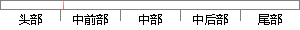

例如网络交易时，需要采用确认（一对一）的技术；
片段位置图

相似结果|
相似片段 1：数据处理与等价密码变换，并基于这种特约数据处理与等价密码变换而允许数据单元的接收者用以确认数据单元来源和数据单元的完整性，以保护数据，防止被他人(例如对方接收者)进行伪造。数字签名就是基于加密技术的一种信息认证技术，在网络中的密钥分配、电子安全交易等方面都有重要应用。
相似片段 2：电子签名作为一项技术，毹决的是网络交易中交易行为确认的问题。就是要解决在“虚拟”的网络交易状态下'交易双方对一项契约以真实的主体资格、真实的意思表示进行确认的问题。有关电子签名的立法，仅仅是对采用
相似片段 3：之前，网络商品交易双方的实体身份难以确认，造成了所谓纳税人难以明确的问题。但即使目前交易双方身份可以确认，税收部门对每个交易者实行一对一税收征缴跟踪确认需要很大成本。通过前文分析，我们发现C2C网络
|
※ 片段修改建议 ※
近似词参考：- 例如：比方
- 网络：收集
- 交易：买卖 生意业务
- 需要：必要
- 采用：采取 接纳 采纳
- 技术：手艺 技能
系统自动生成语句：比方收集买卖时，必要采取确认（一对一）的手艺；
注：本片段修改建议为系统自动生成，仅供参考。